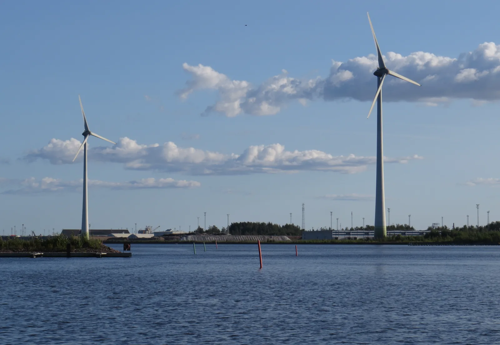
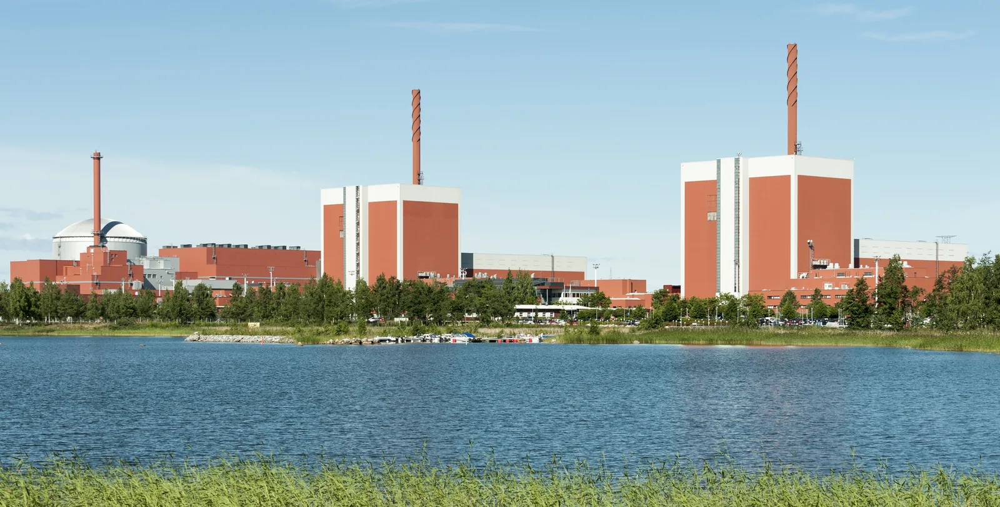

Ways of producing energy and how they compare
Why do nuclear power, hydropower, wind power and fuel-fired power plants all run in the Finnish electricity grid at the same time, even though one type of plant could in principle produce all the electricity?
Prior knowledge
- Power tells you how quickly energy is transferred, $P = E : t$chapter Power P = ΔE/Δt
- The energy of a fuel is calculated with the heat of combustion, $E = Hm$chapter Fuels and heat of combustion $E = Hm$
- Efficiency tells you what fraction of the energy is usefulchapter Efficiency
Core path: follow the steps in order. Tasks marked Optional give extra practice. Optional tasks: 4.
Think about it
On a frosty morning at eight o'clock Finland wakes up: heating, industry and trains use more electricity than almost ever. There is little wind, and the Sun will not rise for another hour. Still, the lights are on. The electricity comes from nuclear power plants, hydropower plants, fuel-fired power plants and a little from wind.
Why does the electricity grid need many different kinds of power plants, instead of just one best one?
Optional Recap: power and energy
Predict
Make your predictions before investigating 1 question
Prediction: the most electricity
Investigate
Electricity production in Finland in 2024
Statistical data · Statistics Finland: Electricity and heat production 2024 (figures for nuclear power and biofuels derived from percentages, rounded; other sources = total production minus the other rows).
The table shows electricity production in Finland in 2024 by energy source. Total production was $79.9\,\text{TWh}$. It also includes small other sources, which are collected on the last row.
| Source | $E$ (TWh) |
|---|---|
| nuclear power | $31$ |
| wind power | $20.2$ |
| hydropower | $14.1$ |
| biofuels | $9.5$ |
| fossil fuels and peat | $3.4$ |
| solar power | $0.9$ |
| other sources | $0.8$ |
Calculate the average power of wind power over the year, when a year has $8760\,\text{h}$. Give the answer in gigawatts.
Hint 1: a guiding question
The average power is found by dividing the energy by time: $P = E : t$.
Hint 2: what is the connection
First convert terawatt-hours to kilowatt-hours: $1\,\text{TWh} = 10^{9}\,\text{kWh}$.
Hint 3: an intermediate step
$P = 20.2 \cdot 10^{9}\,\text{kWh} : 8760\,\text{h}$, and finally $1\,\text{GW} = 10^{6}\,\text{kW}$.
Show the solution
Given
energy $E = 20.2\,\text{TWh}$, time $t = 8760\,\text{h}$
Find
the average power $P$ of wind power in gigawatts
Principle
The average power is the power at which the same energy would be produced steadily over the whole year, so $E = P t$.
Formula
$E = P t$, so $P = \dfrac{E}{t}$
Conversions
$20.2\,\text{TWh} = 20.2 \cdot 10^{9}\,\text{kWh}$, and finally kilowatts to gigawatts: $10^{6}\,\text{kW} = 1\,\text{GW}$.
Substitution
Answer
$2.31\,\text{GW}$
Three significant figures like the energy $20.2\,\text{TWh}$; the number of hours in a year, $8760\,\text{h}$, is an exact number.
Reasonableness
Estimate:
The average power is smaller than the combined rated power of the wind turbines, because the wind varies.
The power of a single power plant
Made-up example data · Typical, rounded powers; Olkiluoto 3 is the largest power plant unit in Finland.
The table shows typical powers of individual power plants. The values are indicative and rounded.
| Power plant | Power |
|---|---|
| solar panels of a detached house | $5\,\text{kW}$ |
| wind turbine | $5\,\text{MW}$ |
| large hydropower plant | $100\,\text{MW}$ |
| Olkiluoto 3 | $1600\,\text{MW}$ |
How many $5.0\,\text{MW}$ wind turbines are needed for their rated power to be equal to the rated power of Olkiluoto 3, $1600\,\text{MW}$?
Hint 1: a guiding question
We compare the same quantity, power: how many times does $5.0\,\text{MW}$ fit into $1600\,\text{MW}$?
Hint 2: what is the connection
Both powers are already in megawatts, so no unit conversions are needed.
Hint 3: an intermediate step
$N = 1600\,\text{MW} : 5.0\,\text{MW}$.
Show the solution
Given
power of a wind turbine $P_\text{t} = 5.0\,\text{MW}$, power of Olkiluoto 3 $P_\text{O} = 1600\,\text{MW}$
Find
the number of wind turbines $N$
Principle
Rated powers are added together, so the combined power of $N$ turbines is $N P_\text{t}$. We want it to be equal to the power of Olkiluoto 3.
Formula
$N P_\text{t} = P_\text{O}$, so $N = \dfrac{P_\text{O}}{P_\text{t}}$
Conversions
Not needed: both powers are in megawatts, so the unit cancels.
Substitution
Answer
$320$
Wind turbines, two significant figures like the power of a wind turbine, $5.0\,\text{MW}$.
Reasonableness
Estimate: $1600 : 5 = 320$. To produce the same annual energy, many more wind turbines would be needed, because the average power of a wind turbine is only a part of its rated power, while Olkiluoto 3 runs almost all the time close to its rated power.
Wind and nuclear power over a week
Made-up example data · An invented, rounded example week; the orders of magnitude correspond to a Finnish winter. Rated power of wind power: Finnish Wind Power Association 2024.
The table shows an example week in January: the power of consumption, nuclear power and wind power as daily averages in gigawatts. The combined rated power of Finnish wind turbines was about $8\,\text{GW}$ at the end of 2024.
| Day | Consumption $(\text{GW})$ | Nuclear $(\text{GW})$ | Wind $(\text{GW})$ |
|---|---|---|---|
| Mon | $11.3$ | $4.3$ | $6.4$ |
| Tue | $11.9$ | $4.3$ | $5.1$ |
| Wed | $12.6$ | $4.3$ | $2.2$ |
| Thu | $13.1$ | $4.3$ | $0.4$ |
| Fri | $12.7$ | $4.3$ | $1.1$ |
| Sat | $11.4$ | $4.3$ | $3.6$ |
| Sun | $10.8$ | $4.3$ | $5.8$ |
The rest of the consumption is produced in other ways: with hydropower, fuel-fired power plants and imported electricity.
How much power had to be produced in these other ways on Thursday? Give the answer in gigawatts.
Hint 1: a guiding question
Production must match consumption at every moment: the sum of the powers of all sources equals consumption.
Hint 2: what is the connection
The power of the other sources is the part of consumption that nuclear and wind power do not cover.
Hint 3: an intermediate step
$P_\text{m} = 13.1\,\text{GW} - 4.3\,\text{GW} - 0.4\,\text{GW}$.
Show the solution
Given
consumption on Thursday $P_\text{cons} = 13.1\,\text{GW}$, power of nuclear power $P_\text{n} = 4.3\,\text{GW}$ and power of wind power $P_\text{t} = 0.4\,\text{GW}$ (from the table)
Find
the power $P_\text{m}$ of the other ways of producing electricity in gigawatts
Principle
Electricity cannot be stored in the grid, so production must match consumption at every moment: the sum of the powers of all sources is the power of consumption. The part that nuclear and wind power do not produce must be produced in other ways.
Formula
$P_\text{cons} = P_\text{n} + P_\text{t} + P_\text{m}$, so $P_\text{m} = P_\text{cons} - P_\text{n} - P_\text{t}$
Conversions
Not needed: all powers are in gigawatts.
Substitution
Answer
$8.4\,\text{GW}$
To one decimal place like the powers in the table, because the difference is as precise as the numbers it is calculated from.
Reasonableness
The result is smaller than consumption, as it should be. On Monday the same calculation gives only $11.3\,\text{GW} - 4.3\,\text{GW} - 6.4\,\text{GW} = 0.6\,\text{GW}$, so the other power plants had to raise their power many times over on Thursday, because the wind died down.
Conclusion: why are many types of power plant needed?
Use the tables and the frosty morning situation from the beginning.
Why does Finnish electricity production have many energy sources, and why can you not see from the rated power of wind power how much wind power actually produces?
Model answer
Finnish production is divided among several sources: in 2024 nuclear power produced about $31\,\text{TWh}$, wind power $20\,\text{TWh}$ and hydropower $14\,\text{TWh}$. In the example week the power of nuclear power stayed at $4.3\,\text{GW}$ all the time, but the power of wind power varied between $0.4$ and $6.4\,\text{GW}$, although its rated power is about $8\,\text{GW}$. The average power of wind power is therefore only a part of its rated power. When the wind died down and consumption grew, the other ways of producing electricity had to raise their power, so controllable power plants such as hydropower are needed. This is why power plants cannot be compared by rated power alone: annual production is the average power multiplied by time, $E = P \cdot t$.
Assess your own answer
Tick the points your own answer already contains.
Review the theory summary and practise with the exercises.
Theory summary
Key idea
A power plant does not produce energy out of nothing. It converts the energy of a natural resource into electricity and often also into heat. The kinetic energy of falling water and wind, the radiant energy of the Sun, the nuclear energy of uranium and the chemical energy of fuel all travel through a turbine and generator or a solar panel into the electricity grid. Energy is conserved, but some of it always ends up as heat in the surroundings (chapter Efficiency).
Renewable and non-renewable energy
Water, wind and solar radiation are renewable: they do not run out when used. Biofuels such as wood are renewable when a new forest grows to replace the old one. Coal, oil and natural gas are fossil fuels, and uranium is also a non-renewable resource. Peat grows in bogs so slowly, over thousands of years, that it is treated like the fossil fuels when emissions are counted; statistics often list it as a group of its own. The emissions and climate effects of power plants are covered in chapter Energy production, the environment and climate change.

Three properties: how a power plant works in the grid
Large amounts of electricity cannot be stored directly in the grid, so production must match consumption at every moment. This is why power plants are described by how their output can be influenced. The groups are useful properties, not categories that exclude each other: hydropower is highly controllable but also depends on rainfall.
| Property | Typical power plants | Power |
|---|---|---|
| Weather-dependent | wind, solar | varies with the weather |
| Controllable | water, fuel | can be adjusted |
| Base load | nuclear power | almost constant |
In a hydropower plant the flow is increased or reduced quickly, but you cannot give orders to the wind or the Sun. A nuclear power plant usually runs steadily at almost full power, but its output can also be reduced when needed: for example, the Olkiluoto units have reduced their output when the price of electricity has been very low.
Criteria for comparison
Different ways of producing energy are compared with the same questions:
- Cost: how much it costs to produce the electricity.
- Power: how large a single power plant is.
- Transportability: whether the energy source can be brought to the plant, like fuel, or whether the plant has to be built where the wind or flowing water is.
- Storability: fuel and a water reservoir can be stored, but wind and solar radiation cannot.
- Safety: the effect and risk of an accident.
- Environment: emissions, land use, nature and waste.
Electricity production in Finland
In 2024 Finland produced about $80\,\text{TWh}$ of electricity in total (Statistics Finland). Nuclear power produced the most, wind power about a quarter, and the share of fossil fuels was only a few per cent. The bars are drawn to scale.

Energy of a power plant
Power tells you how quickly a power plant produces energy. When the power is constant, the energy produced is power multiplied by time:
$$E = P \cdot t$$
where $E$ is the energy produced, $P$ is the power of the plant and $t$ is time. When the power is in kilowatts and the time in hours, the energy is in kilowatt-hours. A year has $t = 8760\,\text{h}$. Large amounts of energy are often given in gigawatt-hours and terawatt-hours: $1\,\text{GWh} = 10^{6}\,\text{kWh}$ and $1\,\text{TWh} = 10^{9}\,\text{kWh}$.
Rated power and average power
The rated power of a power plant is the highest power at which it can operate. A wind turbine does not produce at rated power all year, because the wind varies. The average power is the energy produced during the year divided by the number of hours in the year. The average power divided by the rated power tells you what fraction of the rated power is used on average.
Orders of magnitude
The power of one power plant can be a thousand times greater than that of another. This is why orders of magnitude are compared using powers of ten. On the horizontal axis of the figure, each step from one vertical line to the next is a factor of ten, so the distance between the points tells you how many factors of ten the power increases by.
Common misconception
Rated power does not tell you how much electricity a power plant actually produces. A wind turbine with a rated power of $5\,\text{MW}$ produces in a year only about a third of what it would produce if the wind always blew at the right speed. Renewable also does not mean available all the time: wind and sun are renewable but weather-dependent.
Summary
- A power plant converts the energy of a natural resource into electricity; energy is conserved, but some of it becomes waste heat.
- Power plants are described by properties that do not exclude each other: weather-dependent (wind, solar), highly controllable (water, fuel) and base load that usually runs steadily (nuclear power).
- The energy produced is $E = P \cdot t$; the average power is the annual energy divided by the number of hours in the year, $8760\,\text{h}$.
- Power plants are compared by cost, power, transportability, storability, safety and environmental effects.
- Orders of magnitude are compared with powers of ten: the rated power of Olkiluoto 3 is more than three hundred times the rated power of a wind turbine.
Optional Return to your prediction
Compare your prediction with the figures for Finnish electricity production. Would you change your prediction? What would happen to the electricity grid if nuclear power disappeared and no controllable production replaced it?
Would you change your prediction?
Apply
Worked example
Problem
A wind turbine has a rated power of $5.0\,\text{MW}$ and produces $14\,\text{GWh}$ of electricity during a year. What is its average power, and what fraction of the rated power is it?
Step 1/7
Given and find. Energy $E = 14\,\text{GWh}$, time $t = 8760\,\text{h}$ and rated power $P_\text{nom} = 5.0\,\text{MW}$. We want the average power $P_\text{avg}$ and its share of the rated power.
Step 2/7
Principle. Energy is power multiplied by time, $E = P t$. The power of a wind turbine varies, so the annual energy gives the average power at which the turbine would have produced the same energy steadily.
Step 3/7
Rearranged formula. $$\begin{aligned} &E = P_\text{avg}\, t \\ &P_\text{avg} = \frac{E}{t} \end{aligned}$$
Step 4/7
Unit conversions.
Step 5/7
Substitution. $$\begin{aligned} P_\text{avg} &= E : t \\ &= 14 \cdot 10^{6}\,\text{kWh} : 8760\,\text{h} \\ &= 1598\,\text{kW} \\ \text{share} &= P_\text{avg} : P_\text{nom} \\ &= 1598\,\text{kW} : 5000\,\text{kW} \\ &= 0.32 \end{aligned}$$
Step 6/7
Result. The average power is
which is $32\,\%$ of the rated power, two significant figures like the energy $14\,\text{GWh}$.
Step 7/7
Reasonableness. If the turbine ran at rated power all year, it would produce
and $14 : 43.8 = 0.32$. The share is less than one, because the wind does not always blow.
Optional Find the mistake
Optional Apply to a new situation
The power of Olkiluoto 3 is $1600\,\text{MW}$.
How many terawatt-hours would it produce in a year if it ran at full power for the whole year ($8760\,\text{h}$)? Give the answer in terawatt-hours.
Hint 1: a guiding question
The power and the time are known, so the energy is found by multiplying them together.
Hint 2: what is the connection
Convert the power to kilowatts: $1600\,\text{MW} = 1600 \cdot 1000\,\text{kW}$. The product is then in kilowatt-hours.
Hint 3: an intermediate step
$E = 1.6 \cdot 10^{6}\,\text{kW} \cdot 8760\,\text{h}$, and finally $1\,\text{TWh} = 10^{9}\,\text{kWh}$.
Show the solution
Given
power $P = 1600\,\text{MW}$, time $t = 8760\,\text{h}$
Find
the annual energy $E$ in terawatt-hours
Principle
The power is constant when the plant runs at full power, so the energy is the power multiplied by time.
Formula
$E = P t$
Conversions
and finally $1\,\text{TWh} = 10^{9}\,\text{kWh}$.
Substitution
Answer
$14.0\,\text{TWh}$
Three significant figures like the power $1600\,\text{MW}$.
Reasonableness
This is an upper limit: actual production is smaller, because the plant is out of use at times. Total production in Finland was $79.9\,\text{TWh}$, and $14.0 : 79.9 \approx 18\,\%$, so one plant would produce at most almost a fifth.
Check your understanding
Exit ticket
Answer on your own first and only then open the answer.
- What property does wind power have, and why is it not enough alone to keep the electricity grid running?
Answer
Wind power is weather-dependent: its power varies with the wind and cannot be increased as needed. In the grid, production must match consumption at every moment, so highly controllable production, such as hydropower, and steady base load are also needed.
1. Concept
2. Rated power and production
3. Properties do not exclude each other
4. Calculation
The average power of a wind turbine over the year is $1.0\,\text{MW}$. How much energy does it produce in a year ($8760\,\text{h}$)? Give the answer in gigawatt-hours.
Hint 1: a guiding question
Energy is the average power multiplied by time.
Hint 2: what is the connection
Convert the power to kilowatts:
Hint 3: an intermediate step
$E = 1000\,\text{kW} \cdot 8760\,\text{h}$, and $1\,\text{GWh} = 10^{6}\,\text{kWh}$.
Show the solution
Given
average power $P = 1.0\,\text{MW}$, time $t = 8760\,\text{h}$
Find
the annual energy $E$ in gigawatt-hours
Principle
The average power is the power at which the plant would produce the same energy steadily, so $E = P t$.
Formula
$E = P t$
Conversions
and finally $1\,\text{GWh} = 10^{6}\,\text{kWh}$.
Substitution
Answer
$8.8\,\text{GWh}$
Two significant figures like the average power $1.0\,\text{MW}$.
Reasonableness
Estimate:
The annual energy of a single power plant is gigawatt-hours, not terawatt-hours, which fits the size of one power plant.
Suggestion: one answer does not show everything you can do, but review the theory summary and do the core exercises.
5. Explain and compare
Compare nuclear power and wind power using at least three criteria (for example power, controllability, storability, environment). Which is suitable as base load and why?
Model answer
The unit power of a nuclear power plant is large (Olkiluoto 3 about $1600\,\text{MW}$), and it runs steadily at almost rated power, so its annual production is large. A wind turbine is smaller (about $5\,\text{MW}$) and its power varies with the wind, so its average power is only a part of its rated power. Neither can be adjusted quickly: adjusting nuclear power is slow and you cannot add wind. Nuclear power is suitable as base load, because its production is steady and predictable. Wind power produces no carbon dioxide in use, and nuclear power produces radioactive waste, which must be stored safely.
Assess your own answer
Tick the points your own answer already contains.
Review the theory summary and practise with the exercises.
Review the chapter's concepts
Cards you mark Review later collect in your review deck.
- Energy production
- Turning energy found in nature into a form people can use, such as electricity or heat.
- Power plant
- A plant where the energy of an energy source is turned into electricity, heat or both.
- Generator
- A device that turns the energy of rotation into electrical energy.
- Turbine
- Flowing water, air or steam turns this device, which drives a generator.
- Thermal power plant
- Thermal energy produces steam, which turns a turbine and a generator.
- Condenser
- Cools the steam from the turbine back into water and at the same time transfers heat to the surroundings.
- Combined heat and power
- The same plant produces both electricity and useful heat, which improves the efficiency.
- District heating
- Centrally produced thermal energy carried by hot water to heat buildings.
- Condensing power
- Electricity production in which the heat left after the turbine is usually not used for district heating.
- Solar power
- The Sun's radiant energy is turned directly into electrical energy, for example in a solar panel.
- Wind power
- The kinetic energy of the air turns a turbine and a generator, which produces electricity.
- Hydropower
- The potential and kinetic energy of water is turned into electricity with a turbine and a generator.
- Bioenergy
- Chemical energy bound in organic matter, used for example by burning it.
- Fossil fuels
- Coal, oil and natural gas are non-renewable fuels whose use increases carbon dioxide emissions.
- Nuclear power
- Energy released in nuclear reactions boils water, and the steam is used to produce electricity.
- Ground-source heat
- Thermal energy stored in the soil or bedrock is transferred to heat buildings.
- Geothermal energy
- Energy from the Earth's internal heat used to produce heat or electricity.
Exercises
Level 1 · basic practice 8 exercises
One formula or one step of reasoning. Core exercises first, the rest is extra practice.
- Exercise 6-1Core
The average power of a wind turbine over a week ($168\,\text{h}$) is $2.5\,\text{MW}$. How much electricity does it produce in a week? Give the answer in megawatt-hours.
Answer
$420\,\text{MWh}$
Show the solution
Given
average power $P = 2.5\,\text{MW}$, time $t = 168\,\text{h}$
Find
the energy $E$ produced in a week, in megawatt-hours
Principle
The average power is the power at which the plant would produce the same energy steadily all the time, so the energy is the average power multiplied by time.
Formula
$E = P t$
Conversions
Not needed: the power is in megawatts and the time in hours, so the product is directly in megawatt-hours.
Substitution
$E$$= 2.5\,\text{MW} \cdot 168\,\text{h}$$= 420\,\text{MWh}$Answer
$420\,\text{MWh}$
Two significant figures like the power $2.5\,\text{MW}$.
Reasonableness
Estimate: $2.5\,\text{MW} \cdot 170\,\text{h} \approx 425\,\text{MWh}$. A week is about $1 : 52$ of a year, so at the same average power the plant would produce in a year about $52 \cdot 420\,\text{MWh} \approx 22\,000\,\text{MWh}$, that is, tens of gigawatt-hours, which fits the size of one wind turbine.
- Exercise 6-2Core
A hydropower plant runs for $8.0\,\text{h}$ at a power of $120\,\text{MW}$ when the consumption of electricity is high in the evening.
How much energy does the plant produce during this time? Give the answer in megawatt-hours.
Answer
$960\,\text{MWh}$
Show the solution
Given
power $P = 120\,\text{MW}$, time $t = 8.0\,\text{h}$
Find
the energy produced $E$, in megawatt-hours
Principle
The plant runs at constant power, so the energy is the power multiplied by the running time.
Formula
$E = P t$
Conversions
Not needed: the power is in megawatts and the time in hours, so the product is directly in megawatt-hours.
Substitution
$E$$= 120\,\text{MW} \cdot 8.0\,\text{h}$$= 960\,\text{MWh}$Answer
$960\,\text{MWh}$
Two significant figures like the time $8.0\,\text{h}$ and the power $120\,\text{MW}$.
Reasonableness
Eight hours is a third of a day, so the energy is a third of the energy of a day, $120\,\text{MW} \cdot 24\,\text{h} = 2880\,\text{MWh}$, and $2880 : 3 = 960$.
- Exercise 6-3
The power of the Olkiluoto 3 nuclear power plant is $1.6\,\text{GW}$.
How much energy does the plant produce in a day when it runs at this power all the time? Give the answer in gigawatt-hours.
Answer
$38\,\text{GWh}$
Show the solution
Given
power $P = 1.6\,\text{GW}$, time $t = 24\,\text{h}$
Find
the energy $E$ produced in a day, in gigawatt-hours
Principle
The plant runs at the same power all the time, so the energy is the power multiplied by time.
Formula
$E = P t$
Conversions
Not needed: the power is in gigawatts and the time in hours, so the product is in gigawatt-hours.
Substitution
$E$$= 1.6\,\text{GW} \cdot 24\,\text{h}$$= 38.4\,\text{GWh}$Answer
$38\,\text{GWh}$
Two significant figures like the power $1.6\,\text{GW}$.
Reasonableness
Estimate: $1.6 \cdot 25 = 40$, so $38\,\text{GWh}$ is of the right order of magnitude. When one plant produces $38\,\text{GWh}$ in a day, it produces over $10\,\text{TWh}$ in a year.
- Exercise 6-4
The bar chart in the figure shows electricity production in Finland in 2024 by energy source (Statistics Finland). Total production was $79.9\,\text{TWh}$. Read from the figure the production of the weather-dependent sources, wind power and solar power.
What percentage of the electricity did they produce together?
Answer
$26.4\,\%$
Show the solution
Given
total production $E_\text{tot} = 79.9\,\text{TWh}$; the production of wind power and solar power is read from the figure
Find
the combined share of wind power and solar power in electricity production, as a percentage
Principle
The power of wind and solar power depends on the weather, so they are weather-dependent ways of producing electricity. Their combined production is the sum of two bars, and the share is found by dividing it by the total production.
Reading the graph
At the end of the wind power bar there is the number $20.2$ and at the end of the short solar power bar $0.9$. The unit of the horizontal axis is $\text{TWh}$, so $E_\text{wind} = 20.2\,\text{TWh}$ and $E_\text{solar} = 0.9\,\text{TWh}$.
Formula
$\text{share}$$= \dfrac{E_\text{wind} + E_\text{solar}}{E_\text{tot}}$Conversions
Not needed: all the energies are in terawatt-hours, so the unit cancels. As a percentage, $1 = 100\,\%$.
Substitution
$\text{share}$$= \dfrac{20.2\,\text{TWh} + 0.9\,\text{TWh}}{79.9\,\text{TWh}}$$= \dfrac{21.1\,\text{TWh}}{79.9\,\text{TWh}}$$= 0.2641$$= 26.41\,\%$Answer
$26.4\,\%$
Three significant figures like the energies $21.1\,\text{TWh}$ and $79.9\,\text{TWh}$.
Reasonableness
$21 : 80 \approx 0.26$, so about a quarter. Almost all of the share is wind power, because the solar power bar is very short. The remaining three quarters or so were produced with nuclear power, hydropower and fuel-fired power.
- Exercise 6-5
The power of the solar panels of a detached house in the middle of a summer day is $4.0\,\text{kW}$.
How much electricity do the panels produce in $3.5\,\text{h}$, when the power stays the same? Give the answer in kilowatt-hours.
Answer
$14\,\text{kWh}$
Show the solution
Given
power $P = 4.0\,\text{kW}$, time $t = 3.5\,\text{h}$
Find
the energy $E$ produced, in kilowatt-hours
Principle
The power of the panels stays the same all the time, so the energy is the power multiplied by time.
Formula
$E = P t$
Conversions
Not needed: the power is in kilowatts and the time in hours, so the product is directly in kilowatt-hours.
Substitution
$E$$= 4.0\,\text{kW} \cdot 3.5\,\text{h}$$= 14\,\text{kWh}$Answer
$14\,\text{kWh}$
Two significant figures like the power $4.0\,\text{kW}$ and the time $3.5\,\text{h}$.
Reasonableness
Estimate: $4\,\text{kW} \cdot 4\,\text{h} = 16\,\text{kWh}$, and the time is a little under four hours, so a slightly smaller $14\,\text{kWh}$ fits. It is roughly the electricity consumption of a detached house in one day without electric heating.
- Exercise 6-6
Which of the following energy sources is renewable?
Answer
Wind
Show the solution
Find
which of the listed energy sources is renewable
Principle
A renewable energy source does not run out when it is used, because the Sun and the water cycle keep replenishing it. A non-renewable source formed over a very long time, and no more of it forms at the rate at which it is used.
Model answer
Wind. The Sun keeps the atmosphere moving all the time, so the energy of the wind does not run out when it is used. Uranium, coal and natural gas are non-renewable: coal and natural gas are fossil fuels that formed over millions of years, and there is a limited amount of uranium. Wind is renewable but weather-dependent, so renewable does not always mean available.
- Exercise 6-7
In an electricity grid, production and consumption must be equal at every moment. What is meant by regulating power?
Answer
A power plant whose power can be changed quickly, such as a hydropower plant.
Show the solution
Find
what is meant by regulating power
Principle
In an electricity grid, production must at every moment be equal to consumption. Regulating power is production whose power can be raised and lowered as needed. Base load power produces steadily, and the power of weather-dependent production varies without anyone being able to decide it.
Model answer
Regulating power is a power plant whose power can be changed quickly to follow consumption, such as a hydropower plant. A nuclear power plant that produces steadily all year is base load power, not regulating power. The power of a wind turbine varies with the weather, but it cannot be regulated as needed, so it is weather-dependent production. That is why regulating power is needed alongside wind power.
- Exercise 6-8
The rated power of an example wind turbine is $4.0\,\text{MW}$, and it produces $11\,\text{GWh}$ of electricity in a year.
For how many hours would the turbine have to run at its rated power to produce the same energy? Give the answer in hours.
Answer
$2800\,\text{h}$
Show the solution
Given
rated power $P_\text{rated} = 4.0\,\text{MW}$, annual energy $E = 11\,\text{GWh}$
Find
the time $t$ in hours for which the turbine would have to run at its rated power to produce the same energy
Principle
Running at its rated power, the turbine produces the energy $E = P_\text{rated}\, t$. When this equals the actual annual energy, the time is obtained by dividing the energy by the rated power.
Formula
$E = P_\text{rated}\, t$, so $t = \dfrac{E}{P_\text{rated}}$
Conversions
$11\,\text{GWh}$$= 11 \cdot 1000\,\text{MWh}$$= 11\,000\,\text{MWh}$Substitution
$t$$= 11\,000\,\text{MWh} : 4.0\,\text{MW}$$= 2750\,\text{h}$Answer
$2800\,\text{h}$
That is, $2.8 \cdot 10^{3}\,\text{h}$ (the calculated value $2750\,\text{h}$ rounded), two significant figures like the power $4.0\,\text{MW}$.
Reasonableness
At its rated power for the whole year the turbine would produce
$4.0\,\text{MW} \cdot 8760\,\text{h}$$= 35\,040\,\text{MWh}$$\approx 35\,\text{GWh}$and $11 : 35 \approx 0.31$. The time $2750\,\text{h}$ is about $31\,\%$ of the $8760$ hours of a year, which fits a wind turbine that does not produce at its rated power all the time.
Level 2 · applied practice 7 exercises
Two steps, working with measured data, a unit conversion or rearranging a formula. Core exercises first, the rest is extra practice.
- Exercise 6-9Core
An example wind farm has a rated power of $25\,\text{MW}$, and its average power over the year is $32\,\%$ of the rated power.
How much electricity does the farm produce in a year, when a year has $8760\,\text{h}$? Give the answer in gigawatt-hours.
Answer
$70\,\text{GWh}$
Show the solution
Given
rated power $P_\text{nom} = 25\,\text{MW}$, average power $32\,\%$ of the rated power, time $t = 8760\,\text{h}$
Find
the energy $E$ produced in a year, in gigawatt-hours
Principle
The power of a wind farm varies, but the annual energy is the same as if the farm ran at its average power all year. The average power is the given share of the rated power, and the energy is the average power multiplied by time.
Formula
$P_\text{avg} = 0.32 \cdot P_\text{nom}$ and $E = P_\text{avg}\, t$
Conversions
$32\,\% = 0.32$. Finally megawatt-hours to gigawatt-hours:
$70\,080\,\text{MWh}$$= 70.08 \cdot 1000\,\text{MWh}$$= 70.08\,\text{GWh}$Substitution
$P_\text{avg}$$= 0.32 \cdot 25\,\text{MW}$$= 8.0\,\text{MW}$$E$$= 8.0\,\text{MW} \cdot 8760\,\text{h}$$= 70\,080\,\text{MWh}$$= 70.08\,\text{GWh}$Answer
$70\,\text{GWh}$
Two significant figures like the rated power $25\,\text{MW}$ and the share $32\,\%$.
Reasonableness
At full power the farm would produce
$25\,\text{MW} \cdot 8760\,\text{h}$$= 219\,000\,\text{MWh}$$\approx 220\,\text{GWh}$and about a third of that is about $70\,\text{GWh}$. The result is smaller than the energy at rated power, because the wind varies.
- Exercise 6-10Core
Finnish hydropower produced about $14\,\text{TWh}$ of electricity in 2024 (Statistics Finland).
For how many hours would Olkiluoto 3 ($1.6\,\text{GW}$) have to run at full power to produce the same energy? Give the answer in hours.
Answer
$8800\,\text{h}$
Show the solution
Given
energy $E = 14\,\text{TWh}$, power $P = 1.6\,\text{GW}$
Find
the time $t$ in hours
Principle
The plant produces at constant power, so the energy is the power multiplied by time. The time is found by dividing the energy by the power.
Formula
$E = P t$, so $t = \dfrac{E}{P}$
Conversions
$14\,\text{TWh} = 14 \cdot 10^{9}\,\text{kWh}$ and $1.6\,\text{GW} = 1.6 \cdot 10^{6}\,\text{kW}$.
Substitution
$t$$= 14 \cdot 10^{9}\,\text{kWh} : (1.6 \cdot 10^{6}\,\text{kW})$$= 8750\,\text{h}$Answer
$8800\,\text{h}$
That is, $8.8 \cdot 10^{3}\,\text{h}$, two significant figures like the power $1.6\,\text{GW}$.
Reasonableness
A year has $8760\,\text{h}$, so the result is almost the whole year: one large nuclear power plant running at full power would produce the annual energy of all Finnish hydropower.
- Exercise 6-11
Nuclear power plants produced about $31\,\text{TWh}$ of electricity in 2024. An example wind turbine produces $12\,\text{GWh}$ in a year.
How many such wind turbines would be needed to produce the same annual energy as the nuclear power plants produced?
Answer
$2600$
Show the solution
Given
energy of nuclear power $31\,\text{TWh}$, annual energy of one wind turbine $12\,\text{GWh}$
Find
the number of wind turbines $N$
Principle
The total energy is the number of turbines times the energy of one turbine, so the number is found by dividing the energy of nuclear power by the energy of one wind turbine.
Formula
$E_\text{nuc} = N E_\text{wind}$, so
$N$$= \dfrac{E_\text{nuc}}{E_\text{wind}}$Conversions
$31\,\text{TWh} = 31 \cdot 10^{9}\,\text{kWh}$ and $12\,\text{GWh} = 12 \cdot 10^{6}\,\text{kWh}$.
Substitution
$N$$= 31 \cdot 10^{9}\,\text{kWh} : (12 \cdot 10^{6}\,\text{kWh})$$= 2583$Answer
$2600$
Wind turbines, two significant figures like the energy of a wind turbine, $12\,\text{GWh}$.
Reasonableness
Estimate: $30\,000\,\text{GWh} : 12\,\text{GWh} = 2500$. The number is in the thousands, because one wind turbine produces in a year only about $0.012\,\text{TWh}$, while nuclear power produces thirty terawatt-hours.
- Exercise 6-12
Olkiluoto 3 ($1.6\,\text{GW}$) runs at full power for the whole year ($8760\,\text{h}$). An example household without electric heating uses $5000\,\text{kWh}$ in a year.
How many households' annual consumption would the plant cover? Give the answer in millions of households.
Answer
$2.8$
Show the solution
Given
power $P = 1.6\,\text{GW}$, time $t = 8760\,\text{h}$, consumption of one household $5000\,\text{kWh}$
Find
the number of households, in millions
Principle
First the annual energy of the plant is calculated with the formula $E = P t$, because the power is constant. Then the energy is divided by the consumption of one household.
Formula
$N = \dfrac{P t}{E_\text{home}}$
Conversions
$1.6\,\text{GW} = 1.6 \cdot 10^{6}\,\text{kW}$, so the product with an hour is in kilowatt-hours.
Substitution
$N$$= 1.6 \cdot 10^{6}\,\text{kW} \cdot 8760\,\text{h} : 5000\,\text{kWh}$$= 14\,016\,000\,000\,\text{kWh} : 5000\,\text{kWh}$$= 2\,803\,200$Answer
$2.8$
Million households, two significant figures like the power $1.6\,\text{GW}$.
Reasonableness
The result is of the same order of magnitude as the number of households in Finland (about $2.86$ million in 2024, Statistics Finland). One plant still does not cover the electricity of the whole country, because industry and services use a large part of it.
- Exercise 6-13
The table gives, as example figures (an example data set, not the statistics of a real country), the electricity production of a country by source in two years ten years apart. Calculate the share of wind power in the total production for both years and the change in the share. Give the answer as the change in percentage points.
Whose energy decreased the most, and what does this tell about the change in the production structure?
Electricity production of an example country by source Production method $E_{1}\,(\text{TWh})$ $E_{2}\,(\text{TWh})$ Nuclear power 22.0 32.0 Hydropower 16.0 14.0 Wind power 1.5 20.0 Thermal power using fuels 28.5 14.0 Answer
$23$
Show the solution
Given
wind power $E_1 = 1.5\,\text{TWh}$ and $E_2 = 20.0\,\text{TWh}$; the other energies of the table for the first and the second year
Find
the share of wind power in the total production for both years and the change in the share in percentage points; the production method whose energy decreased the most
Principle
The share is the energy of the source divided by the total energy, so the total production is calculated first by addition. The change in the share is the share of the second year minus the share of the first year.
Formula
$o$$= \dfrac{E_\text{wind}}{E_\text{tot}}$$\Delta o = o_2 - o_1$
Conversions
Not needed: all the energies are in terawatt-hours. The share is changed into a percentage by multiplying by one hundred.
Substitution
The total production is in the first year $22.0 + 16.0 + 1.5 + 28.5 = 68.0\,\text{TWh}$ and in the second $32.0 + 14.0 + 20.0 + 14.0 = 80.0\,\text{TWh}$. The shares of wind power are $o_1 = 1.5 : 68.0 = 0.0221 = 2.2\,\%$ and $o_2 = 20.0 : 80.0 = 0.250 = 25\,\%$. The change is $\Delta o = 25.0\,\% - 2.2\,\% = 22.8$ percentage points.
Answer
The share of wind power grew by $23$ percentage points (calculated value $22.8$; from $2.2\,\%$ to $25\,\%$), two significant figures like the energy of wind power $1.5\,\text{TWh}$. The energy of thermal power using fuels decreased the most: $28.5\,\text{TWh} - 14.0\,\text{TWh} = 14.5\,\text{TWh}$. The production structure shifted from fuels to wind and nuclear power, so the share of production that causes emissions became smaller. At the same time the share of weather-dependent production grew, so the need for regulating power grew.
Reasonableness
The shares must add up to one hundred percent: in the second year
$32.0 : 80.0 + 14.0 : 80.0 + 20.0 : 80.0 + 14.0 : 80.0$$= 0.40 + 0.175 + 0.25 + 0.175$$= 1.00$The energy of wind power grew to about $20.0 : 1.5 \approx 13$ times, so a growth of the share of tens of percentage points is believable.
- Exercise 6-14
The table gives, as example figures (an example data set), the rated power and the energy produced during a year for three wind farms. A student says: “Farm B produces the most electricity, so it makes the best use of its rated power.”
a) For each farm, calculate how large a share of the rated power is in use on average, when a year has $8760\,\text{h}$.
b) Is the student right? What is the error in the student's reasoning? Answer in the box with the average power of the best farm as a percentage of its rated power.
Rated power and annual production of three wind farms Farm $P_\text{rated}\,(\text{MW})$ $E\,(\text{GWh})$ A 30 84 B 60 150 C 12 35 Answer
$33\,\%$
Show the solution
Given
farms A $30\,\text{MW}$, $84\,\text{GWh}$; B $60\,\text{MW}$, $150\,\text{GWh}$; C $12\,\text{MW}$, $35\,\text{GWh}$; year $8760\,\text{h}$
Find
the share of the average power of the rated power for each farm, and whether the student's claim is correct
Principle
The average power is the annual energy divided by the number of hours in a year, $P_\text{avg} = E : t$. Its share of the rated power tells how well the rated power is used. The annual energy also depends on the size of the rated power, so the greatest annual energy does not tell the share.
Formula
$P_\text{avg}$$= \dfrac{E}{t}$$o$$= \dfrac{P_\text{avg}}{P_\text{rated}}$Conversions
$E_\text{A}$$= 84\,\text{GWh}$$= 84\,000\,\text{MWh}$$E_\text{B} = 150\,000\,\text{MWh}$ and $E_\text{C} = 35\,000\,\text{MWh}$.
Substitution
$P_\text{avg} = E : t$ and $o = P_\text{avg} : P_\text{rated}$
$$\begin{aligned} P_\text{A} &= 84\,000\,\text{MWh} : 8760\,\text{h} \\ &= 9.6\,\text{MW} \\ o_\text{A} &= 9.6\,\text{MW} : 30\,\text{MW} = 0.32 \\ P_\text{B} &= 150\,000\,\text{MWh} : 8760\,\text{h} \\ &= 17.1\,\text{MW} \\ o_\text{B} &= 17.1\,\text{MW} : 60\,\text{MW} = 0.29 \\ P_\text{C} &= 35\,000\,\text{MWh} : 8760\,\text{h} \\ &= 4.0\,\text{MW} \\ o_\text{C} &= 4.0\,\text{MW} : 12\,\text{MW} = 0.33 \end{aligned}$$
Answer
The student is not right. Farm B produces the most energy because its rated power is the greatest, but it makes the poorest use of its rated power ($29\,\%$). The error is to mix up the annual energy and the use of the rated power: the energy grows with the rated power, so the share must be calculated by dividing the average power by the rated power. The best is farm C, whose average power is $33\,\%$ of the rated power, two significant figures like the rated powers.
Reasonableness
If farm B ran at its rated power the whole year, it would produce
$60\,\text{MW} \cdot 8760\,\text{h}$$= 525\,600\,\text{MWh}$$\approx 526\,\text{GWh}$and $150 : 526 = 0.29$. All the shares are below one and of the order of a third, as is typical for wind power, because the wind varies.
- Exercise 6-15
The table gives, as example figures (an example data set), the life-cycle emissions of four production methods, that is, the amount of carbon dioxide produced over the whole life cycle per kilowatt-hour of electricity produced, and the lifetime of the plant. An example city uses $2.0\,\text{TWh}$ of electricity per year.
a) Take the part of the life-cycle emissions that belongs to one year's electricity production. How many million tonnes of carbon dioxide per year would be saved if the city's electricity were produced with wind power instead of coal? Use the emission factors and convert $1\,\text{t} = 10^{6}\,\text{g}$.
b) Which production method would be the best choice on the basis of emissions and lifetime? What does the table not tell, even though the choice would have to be made?
Life-cycle emissions and lifetime of production methods Production method $m/E\,(\text{g/kWh})$ Lifetime $(\text{a})$ Coal 820 40 Solar power 45 30 Wind power 12 25 Nuclear power 12 60 Answer
$1.6$
Show the solution
Given
emission factors coal $820\,\text{g/kWh}$ and wind power $12\,\text{g/kWh}$, the city's electricity $E = 2.0\,\text{TWh}$ per year
Find
the amount of carbon dioxide saved from the life-cycle emissions that belong to one year's electricity production, in millions of tonnes, when coal is replaced by wind power; the best choice
Principle
The emission is the emission factor multiplied by the energy produced. The saving is the difference between the emissions of coal and wind power, because the energy is the same in both.
Formula
$\Delta m = (k_\text{coal} - k_\text{wind})\, E$
Conversions
$2.0\,\text{TWh} = 2.0 \cdot 10^{9}\,\text{kWh}$. Finally grams into tonnes:
$1.616 \cdot 10^{12}\,\text{g}$$= 1.616 \cdot 10^{12} : 10^{6}\,\text{t}$$= 1.616 \cdot 10^{6}\,\text{t}$Substitution
$\Delta m$$= (820\,\text{g/kWh} - 12\,\text{g/kWh}) \cdot 2.0 \cdot 10^{9}\,\text{kWh}$$= 808\,\text{g/kWh} \cdot 2.0 \cdot 10^{9}\,\text{kWh}$$= 1.616 \cdot 10^{12}\,\text{g}$$= 1.616 \cdot 10^{6}\,\text{t}$Answer
About $1.6$ million tonnes of carbon dioxide per year, two significant figures like the energy $2.0\,\text{TWh}$. On the basis of emissions and lifetime the best choice is nuclear power: its emission factor $12\,\text{g/kWh}$ is the smallest (as small as that of wind power) and its lifetime $60\,\text{a}$ is the longest. The table does not tell the controllability of power, the costs, the weather dependence, the land use or the waste, all of which affect the choice. For example, wind power and solar power are weather-dependent and need regulating power.
Reasonableness
The emissions of coal are $820 : 12 \approx 68$ times the emissions of wind power, so almost the whole emission of coal,
$820\,\text{g/kWh} \cdot 2.0 \cdot 10^{9}\,\text{kWh}$$= 1.64 \cdot 10^{6}\,\text{t}$is saved, and $1.616 : 1.64 = 0.99$.
Level 3 · challenging 5 exercises
Optional: application, two ideas together or a new situation where you reason for yourself.
- Exercise 6-16
An example frosty evening: the consumption of electricity in Finland is $11\,\text{GW}$. Nuclear power plants run at a power of $3.5\,\text{GW}$. The combined rated power of wind turbines is $9.0\,\text{GW}$, but the wind is weak and they produce only $4.0\,\%$ of their rated power.
How much power must other power plants and imported electricity produce? Give the answer in gigawatts.
Answer
$7.1\,\text{GW}$
Show the solution
Given
consumption $11\,\text{GW}$, nuclear power $3.5\,\text{GW}$, rated power of wind power $9.0\,\text{GW}$ and actual power $4.0\,\%$ of it
Find
the power $P_\text{other}$ that other power plants and imports must produce, in gigawatts
Principle
In the electricity grid, production and consumption must be equal at every moment, so the missing power is the consumption minus the power of weather-dependent and steady production.
Formula
$P_\text{other}$$= P_\text{cons} - P_\text{nuc} - 0.040 \cdot P_\text{wind,nom}$Conversions
Not needed: all powers are in gigawatts. The percentage is $4.0\,\% = 0.040$.
Substitution
$P_\text{other}$$= 11\,\text{GW} - 3.5\,\text{GW} - 0.040 \cdot 9.0\,\text{GW}$$= 11\,\text{GW} - 3.5\,\text{GW} - 0.36\,\text{GW}$$= 7.14\,\text{GW}$Answer
$7.1\,\text{GW}$
Two significant figures like the rated power of wind power, $9.0\,\text{GW}$.
Reasonableness
In weak wind, wind power covers only about $0.36 : 11 \approx 3\,\%$ of consumption, so most of the missing power must be produced by controllable means: hydropower, fuels or imports. This is why weather-dependent production needs controllable production alongside it.
- Exercise 6-17
An example wind farm and nuclear power plant have the same rated power, $600\,\text{MW}$. The average power of the wind farm is $33\,\%$ and that of the nuclear power plant $90\,\%$ of the rated power.
How many times as much energy does the nuclear power plant produce in a year? Give the answer as a factor.
Answer
$2.7$
Show the solution
Given
rated power $600\,\text{MW}$ for both, average power of the wind farm $33\,\%$ and of the nuclear power plant $90\,\%$ of the rated power
Find
the ratio of the annual energies $E_\text{nuc} : E_\text{wind}$
Principle
The annual energy of each is the average power times the same length of year, $E = P_\text{avg} t$. The rated power and the time are the same, so the ratio depends only on the shares of the average powers.
Formula
$\dfrac{E_\text{nuc}}{E_\text{wind}}$$= \dfrac{0.90 \cdot 600\,\text{MW} \cdot t}{0.33 \cdot 600\,\text{MW} \cdot t}$Conversions
Not needed: the rated power and the time cancel.
Substitution
$\dfrac{E_\text{nuc}}{E_\text{wind}}$$= 0.90 : 0.33$$= 2.727$Answer
$2.7$
Times, two significant figures like the shares $0.90$ and $0.33$.
Reasonableness
Check with the annual energies: nuclear power $0.90 \cdot 600\,\text{MW} \cdot 8760\,\text{h} \approx 4.7\,\text{TWh}$ and the wind farm $0.33 \cdot 600\,\text{MW} \cdot 8760\,\text{h} \approx 1.7\,\text{TWh}$, and $4.7 : 1.7 \approx 2.7$. The same rated power does not mean the same annual energy.
- Exercise 6-18
An example municipality proposes a solar park that would replace Olkiluoto 3 ($1600\,\text{MW}$). The average power of the solar park over the year is $11\,\%$ and that of Olkiluoto 3 $90\,\%$ of the rated power.
How large should the rated power of the solar park be for it to produce as much energy in a year as Olkiluoto 3? Give the answer in gigawatts. Also consider whether such a park would replace Olkiluoto 3 on a January evening.
Answer
$13\,\text{GW}$
Show the solution
Given
rated power of Olkiluoto 3 $P_\text{O} = 1600\,\text{MW}$ and average power $90\,\%$ of it, average power of the solar park $11\,\%$ of its rated power, the same time $t$ (a year) for both
Find
the rated power $P_\text{a}$ of the solar park in gigawatts, and whether the park would replace Olkiluoto 3 on a January evening
Principle
The annual energy is the average power multiplied by time, $E = P_\text{avg} t$, and the average power is the given share $o$ of the rated power. The time is the same year for both, so the annual energies are equal when the average powers are equal.
Formula
$o_\text{a} P_\text{a}\, t = o_\text{O} P_\text{O}\, t$, so
$P_\text{a}$$= \dfrac{o_\text{O} P_\text{O}}{o_\text{a}}$Conversions
$o_\text{O} = 90\,\% = 0.90$ and $o_\text{a} = 11\,\% = 0.11$. Finally megawatts to gigawatts:
$13\,091\,\text{MW}$$= 13.091 \cdot 1000\,\text{MW}$$= 13.1\,\text{GW}$Substitution
$P_\text{a}$$= 0.90 \cdot 1600\,\text{MW} : 0.11$$= 1440\,\text{MW} : 0.11$$= 13\,091\,\text{MW}$$= 13.1\,\text{GW}$Answer
$13\,\text{GW}$
Two significant figures like the shares $11\,\%$ and $90\,\%$.
Reasonableness
Estimate: $90 : 11 \approx 8$, so about eight times as much rated power is needed, $8 \cdot 1.6\,\text{GW} \approx 13\,\text{GW}$. On a January evening the Sun has set, so the park produces nothing at all, even if its annual energy were the same as that of Olkiluoto 3. Then controllable production, such as hydropower and fuel-fired power plants, or imported electricity and energy storage, would be needed in place of Olkiluoto 3. The same annual energy therefore does not mean that one power plant replaces another at every moment.
- Exercise 6-19
The table gives, as example figures (an example data set), the average wind power and the electricity consumption for each day of a week. The total rated power of the wind turbines is $9.0\,\text{GW}$. Nuclear power plants produce a steady $3.5\,\text{GW}$ for the whole week. Assume that other production and imports cover what wind and nuclear power leave uncovered.
a) Calculate the energy produced by wind power in the week in gigawatt-hours and the average power of wind power as a percentage of the rated power.
b) For each day, calculate the power that other power plants and imports must produce. Answer in the box with the greatest such power in gigawatts.
c) What does the variation of wind power require of the rest of the electricity system? Justify with the numbers in the table, and also comment on Sunday.
Wind power and electricity consumption during a week Day $P_\text{wind}\,(\text{GW})$ $P_\text{consumption}\,(\text{GW})$ Monday 4.8 9.5 Tuesday 3.1 9.8 Wednesday 0.6 10.2 Thursday 0.4 10.6 Friday 1.9 10.1 Saturday 4.2 8.7 Sunday 5.4 8.4 Answer
$6.7\,\text{GW}$
Show the solution
Given
rated power of wind power $P_\text{rated} = 9.0\,\text{GW}$, nuclear power $P_\text{nuclear} = 3.5\,\text{GW}$ for the whole week, the daily $P_\text{wind}$ and $P_\text{consumption}$ from the table, week $168\,\text{h}$
Find
a) the weekly energy of wind power and its average power as a share of the rated power; b) the daily power of other power plants and imports, and its greatest value; c) what the variation requires of the system
Principle
In the grid, production must match consumption at every moment, so the others must produce the consumption minus nuclear and wind power. The weekly energy of wind power is the sum of the daily powers multiplied by the length of a day, because on each day the power is constant on average.
Formula
$E_\text{wind}$$= \left(\sum P_\text{wind}\right) \Delta t_\text{day}$$P_\text{avg}$$= \dfrac{E_\text{wind}}{\Delta t_\text{week}}$$P_\text{other} = P_\text{consumption} - P_\text{nuclear} - P_\text{wind}$
Conversions
Not needed: the powers are in gigawatts and the energy is calculated in gigawatt-hours. A week has $7 \cdot 24\,\text{h} = 168\,\text{h}$.
Substitution
a) The sum of the daily powers of wind power is $4.8 + 3.1 + 0.6 + 0.4 + 1.9 + 4.2 + 5.4 = 20.4\,\text{GW}$, so
$E_\text{wind}$$= (\Sigma P_\text{wind}) \cdot 24\,\text{h}$$= 20.4\,\text{GW} \cdot 24\,\text{h}$$= 489.6\,\text{GWh}$The average power is
$P_\text{avg}$$= 489.6\,\text{GWh} : 168\,\text{h}$$= 2.91\,\text{GW}$and the share of the rated power $2.91 : 9.0 = 0.32$, that is, $32\,\%$.
b) The power of the others is $P_\text{other} = P_\text{consumption} - 3.5\,\text{GW} - P_\text{wind}$, in gigawatts:$$\begin{aligned} P_\text{Mo} &= 9.5 - 3.5 - 4.8 = 1.2 \\ P_\text{Tu} &= 9.8 - 3.5 - 3.1 = 3.2 \\ P_\text{We} &= 10.2 - 3.5 - 0.6 = 6.1 \\ P_\text{Th} &= 10.6 - 3.5 - 0.4 = 6.7 \\ P_\text{Fr} &= 10.1 - 3.5 - 1.9 = 4.7 \\ P_\text{Sa} &= 8.7 - 3.5 - 4.2 = 1.0 \\ P_\text{Su} &= 8.4 - 3.5 - 5.4 = -0.5 \end{aligned}$$
Answer
a) $490\,\text{GWh}$ and $32\,\%$ of the rated power. b) The greatest need is on Thursday, $6.7\,\text{GW}$, two significant figures like the rated power of wind power $9.0\,\text{GW}$. c) The power of the rest of the system must vary a great deal: the need was $6.7\,\text{GW}$ on Thursday and only $1.0\,\text{GW}$ on Saturday, so between the weekdays and Saturday the variation is $5.7\,\text{GW}$, and including Sunday ($-0.5\,\text{GW}$) as much as $7.2\,\text{GW}$ in a few days. From Wednesday to Thursday the wind produced only about $0.4$–$0.6\,\text{GW}$ although the rated power is $9.0\,\text{GW}$, so the rated power does not guarantee production. Controllable production (for example hydropower), imports or energy storage are needed for days of weak wind. On Sunday production exceeds consumption by $0.5\,\text{GW}$, so the surplus electricity must be exported, stored, or production must be reduced.
Reasonableness
The sum of the daily consumption powers $9.5 + 9.8 + 10.2 + 10.6 + 10.1 + 8.7 + 8.4 = 67.3\,\text{GW}$ times $24\,\text{h}$ is the weekly consumption $1615\,\text{GWh}$. Nuclear power produces $3.5\,\text{GW} \cdot 168\,\text{h} = 588\,\text{GWh}$ and wind power $489.6\,\text{GWh}$, so the energy of the others is $1615 - 588 - 490 = 537\,\text{GWh}$. The sum of the daily powers of the others
$\Sigma P_\text{other}$$= 1.2 + 3.2 + 6.1 + 6.7 + 4.7 + 1.0 - 0.5$$= 22.4\,\text{GW}$times $24\,\text{h}$ is $538\,\text{GWh}$, so the calculations agree. Wind power covers only $490 : 1615 = 0.30$, that is, $30\,\%$ of the weekly consumption, although its rated power is almost as great as the consumption.
- Exercise 6-20
A municipality is comparing two ways of producing electricity. The table gives, as example figures (an example data set, not data of real projects), the details of a wind farm and a nuclear power plant. Assume that each plant produces the same amount of energy every year during its whole lifetime as in the first year, and that the cost is only the construction cost. A year has $8760\,\text{h}$.
a) Calculate the annual energy of each plant in megawatt-hours.
b) Calculate the construction cost per megawatt-hour produced over the whole lifetime. Answer in the box with the value of the wind farm in euros per megawatt-hour.
c) For each plant, calculate the amount of carbon dioxide in tonnes that belongs to one year's production from the life-cycle emissions, when $1\,\text{t} = 10^{6}\,\text{g}$.
d) Compare the production methods on the basis of emissions, cost and controllability, and give a justified recommendation.
Comparison of a wind farm and a nuclear power plant Property Wind farm Nuclear power plant Rated power $P_\text{rated}\,(\text{MW})$ 100 1200 Average power, share of rated power $(\%)$ 33 90 Construction cost $K\,(\text{million €})$ 120 6000 Lifetime $(\text{a})$ 25 60 Life-cycle emissions $m/E\,(\text{g/kWh})$ 12 12 Controllability of power Weather-dependent Steady Answer
$17\,\text{euros/MWh}$
Show the solution
Given
wind farm $P_\text{rated} = 100\,\text{MW}$, average power $33\,\%$, $K = 120$ million euros, lifetime $25\,\text{a}$, $12\,\text{g/kWh}$; nuclear power plant $1200\,\text{MW}$, $90\,\%$, $K = 6000$ million euros, $60\,\text{a}$, $12\,\text{g/kWh}$; year $8760\,\text{h}$
Find
a) the annual energies; b) the construction cost per megawatt-hour produced, the wind farm in the box; c) the amount of carbon dioxide from the life-cycle emissions that belongs to one year's production; d) a justified comparison
Principle
The annual energy is the average power multiplied by the length of a year, and the average power is a share of the rated power. The energy over the lifetime is the annual energy multiplied by the lifetime. The cost per energy is the construction cost divided by the energy over the lifetime. The emission is the emission factor multiplied by the energy.
Formula
$E_\text{y} = o\, P_\text{rated}\, t$, $E_\text{tot} = E_\text{y} \cdot a$ and $k = \dfrac{K}{E_\text{tot}}$
Conversions
$120\,\text{million euros} = 120 \cdot 10^{6}\,\text{euros}$ and $6000\,\text{million euros} = 6000 \cdot 10^{6}\,\text{euros}$. For emissions $1\,\text{MWh} = 1000\,\text{kWh}$ and $1\,\text{t} = 10^{6}\,\text{g}$.
Substitution
a) Wind farm:
$E_\text{y}$$= 0.33 \cdot 100\,\text{MW} \cdot 8760\,\text{h}$$= 289\,080\,\text{MWh}$Nuclear power plant:
$E_\text{y}$$= 0.90 \cdot 1200\,\text{MW} \cdot 8760\,\text{h}$$= 9\,460\,800\,\text{MWh}$b) Wind farm:
$E_\text{tot}$$= 289\,080\,\text{MWh} \cdot 25$$= 7\,227\,000\,\text{MWh}$$k$$= 120 \cdot 10^{6}\,\text{euros} : 7\,227\,000\,\text{MWh}$$= 16.6\,\text{euros/MWh}$Nuclear power plant:
$E_\text{tot}$$= 9\,460\,800\,\text{MWh} \cdot 60$$= 567\,648\,000\,\text{MWh}$$k$$= 6000 \cdot 10^{6}\,\text{euros} : 567\,648\,000\,\text{MWh}$$= 10.6\,\text{euros/MWh}$c) Wind farm:
$289\,080\,000\,\text{kWh} \cdot 12\,\text{g/kWh}$$= 3.469 \cdot 10^{9}\,\text{g}$$= 3469\,\text{t}$Nuclear power plant:
$9\,460\,800\,000\,\text{kWh} \cdot 12\,\text{g/kWh}$$= 1.135 \cdot 10^{11}\,\text{g}$$= 113\,500\,\text{t}$Answer
The construction cost of the wind farm is $17\,\text{euros/MWh}$ (calculated value $16.6$; two significant figures like the share $33\,\%$) and that of the nuclear power plant $11\,\text{euros/MWh}$. The annual energies are $2.9 \cdot 10^{5}\,\text{MWh}$ and $9.5 \cdot 10^{6}\,\text{MWh}$, and the life-cycle emissions that belong to one year's production are about $3500\,\text{t}$ and $114\,000\,\text{t}$. The emissions per energy are the same ($12\,\text{g/kWh}$), so the large annual emissions of the nuclear power plant are due only to its large production. In this data set the construction cost per energy is smaller for nuclear power, because it produces at a greater share of its rated power and for longer. Nuclear power is steady base load power, but it cannot be regulated quickly, and it involves nuclear waste. Wind power is weather-dependent, so it needs regulating power or storage alongside it. A justified recommendation is a combination: on the basis of emissions either is suitable, and on the basis of cost nuclear power is cheaper, but weather-dependent wind power suits complementing it when there is enough regulating power. The recommendation, however, rests only on this example data set and on the construction cost alone.
Reasonableness
The nuclear power plant produces $9\,460\,800 : 289\,080 \approx 33$ times as much per year as the wind farm, and the emissions are $113\,500 : 3469 \approx 33$ times as large, which matches the ratio of production, because the emission factor is the same $12\,\text{g/kWh}$ for both. At full power for the whole year the wind farm would produce $100\,\text{MW} \cdot 8760\,\text{h} = 876\,000\,\text{MWh}$, and $289\,080 : 876\,000 = 0.33$.